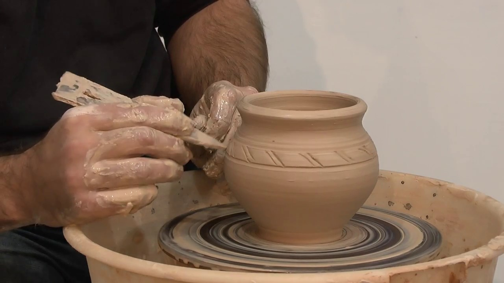
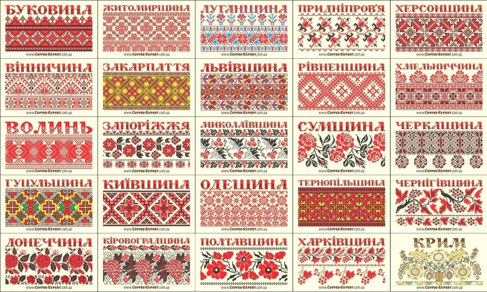
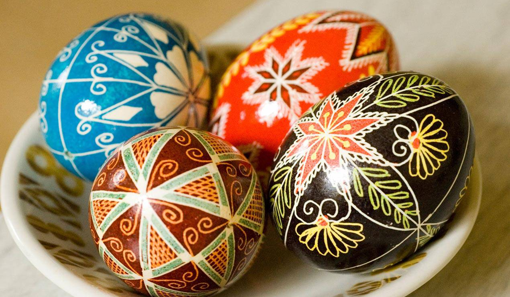

Один із найвідоміших українських видів декоративного мистецтва, що зародився на Дніпропетровщині. Петриківський розпис прикрашав стіни, посуд, меблі та інші побутові речі. Сьогодні це офіційна культурна спадщина ЮНЕСКО.
Петриківський розпис
Гончарство

Традиційне виготовлення посуду та інших предметів із глини. Відомими центрами гончарства є Косів і Опішня, які й досі підтримують традицію створення керамічних виробів.
Вишивка

Українська вишивка – символ культурної спадщини. Різноманітні орнаменти й кольори залежали від регіону, де створювалися, та мали своє символічне значення.
Писанкарство

Розпис великодніх яєць із використанням орнаментів, що передають давні традиції та вірування. Кожен символ на писанці має своє особливе значення.